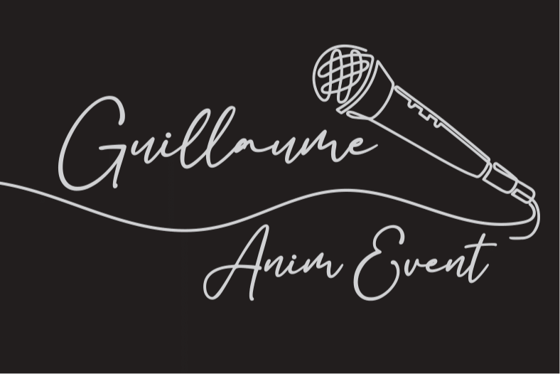

Pourquoi un Logo Professionnel est Essentiel pour votre Entreprise ?
Dans un marché concurrentiel comme celui du Var et de la Côte d'Azur, votre logo est bien plus qu'un simple dessin : c'est la première impression que vous donnez à vos clients potentiels. Que vous soyez artisan à Fréjus, commerçant à Saint-Raphaël ou entrepreneur sur toute la Côte d'Azur, votre identité visuelle joue un rôle crucial dans votre succès.
💡 Le saviez-vous ?
Il faut moins de 7 secondes à un client potentiel pour se faire une première impression de votre entreprise. Un logo professionnel bien conçu peut faire la différence entre un prospect intéressé et un client perdu.
Les 5 bénéfices d'un logo professionnel
- Crédibilité instantanée : Un logo soigné renvoie une image professionnelle et rassure vos clients
- Mémorabilité : 80% des consommateurs se souviennent d'une marque grâce à sa couleur et son logo
- Différenciation : Dans le Var où la concurrence est forte, un logo unique vous distingue
- Cohérence : Base de toute votre communication (cartes de visite, site web, enseignes, véhicules)
- Valeur patrimoniale : Votre logo devient un actif de votre entreprise, il prend de la valeur avec le temps
Quel Budget Prévoir pour la Création d'un Logo à Fréjus ?
La question du budget est souvent la première qui vient à l'esprit. Les tarifs pour créer un logo dans le Var varient considérablement selon le prestataire et le niveau de service. Voici un aperçu réaliste du marché local :
Comparatif des prestataires création logo Fréjus / Var
-
❌
Logo sur plateforme en ligne (entrée de gamme)
Résultat générique, aucune personnalisation, aucun accompagnement. À éviter pour une vraie entreprise.
-
⚠️
Graphiste débutant / freelance junior
Qualité variable, peu d'expérience, risque de révisions multiples. Tarifs attractifs mais résultat incertain.
-
✅
Graphiste professionnel local
Bon rapport qualité/prix, expertise locale, accompagnement personnalisé. Recommandé pour TPE/PME.
-
⭐
Agence de communication (haut de gamme)
Package complet avec charte graphique, stratégie de marque, déclinaisons. Idéal pour grandes entreprises.
💰 Notre prestation chez Création Édition & Broderie
Nous proposons un service complet de création de logo professionnel, incluant :
- Brief approfondi et étude de votre secteur
- 3 propositions créatives uniques
- 2 séries de révisions incluses
- Fichiers vectoriels HD (AI, EPS, PDF) + PNG/JPG
- Déclinaisons couleurs, N&B, monochrome
- Droits d'utilisation complets et illimités
- Accompagnement personnalisé à Fréjus
Les 6 Étapes de Création d'un Logo Professionnel
Créer un logo ne s'improvise pas. Voici notre processus éprouvé, fruit de plus de 15 ans d'expérience dans le Var :
Étape 1 : Le Brief Créatif
Tout commence par une discussion approfondie pour comprendre votre activité, vos valeurs, votre cible et votre positionnement. Nous analysons :
- Votre secteur d'activité et vos concurrents dans le Var
- Votre clientèle cible (B2B, B2C, local, touristes...)
- Les émotions et messages que vous souhaitez transmettre
- Vos préférences esthétiques (moderne, classique, minimaliste...)
- Vos contraintes (couleurs imposées, éléments à intégrer...)
Étape 2 : La Recherche et l'Inspiration
Notre graphiste étudie votre marché, analyse les tendances actuelles et s'imprègne de l'identité de votre entreprise. Cette phase de recherche est cruciale pour créer un logo véritablement unique et pertinent.
Étape 3 : Les Esquisses et Concepts
Nous développons plusieurs pistes créatives avant de sélectionner les 3 concepts les plus prometteurs. Ces propositions sont travaillées en détail avec différentes typographies, couleurs et compositions.
Étape 4 : La Présentation
Nous vous présentons les 3 concepts avec une explication détaillée des choix créatifs : symbolique des formes, psychologie des couleurs, pertinence pour votre secteur. À Fréjus, nous privilégions les rendez-vous en personne pour un échange riche.
Étape 5 : Les Révisions
Vous choisissez votre concept favori que nous perfectionnons selon vos retours. Deux séries de révisions sont incluses pour garantir votre satisfaction totale. Chaque ajustement est réfléchi pour optimiser l'efficacité de votre logo.
Étape 6 : La Livraison Finale
Vous recevez un package complet avec tous les fichiers dans différents formats, optimisés pour tous vos usages : impression grand format, web, broderie textile, gravure, etc. Nous vous expliquons comment utiliser chaque fichier.
⏱️ Combien de temps pour créer votre logo ?
Délai standard : 7 à 10 jours ouvrés
Ce délai vous paraît long ? C'est normal ! Un bon logo nécessite réflexion, recherche et maturation. Méfiez-vous des promesses de livraison en 24h : la qualité prend du temps. Pour les projets urgents, nous proposons également un service express.
Les Erreurs à Éviter Absolument
En 15 ans d'activité à Fréjus, nous avons vu de nombreuses entreprises commettre ces erreurs coûteuses :
❌ Erreur n°1 : Copier la concurrence
"Je veux un logo comme celui de mon concurrent qui marche bien". Cette approche est contre-productive ! Vous devez vous différencier, pas ressembler. Un logo trop similaire dilue votre identité et peut même poser des problèmes légaux.
❌ Erreur n°2 : Vouloir tout dire dans le logo
Un logo n'est pas un catalogue ! Évitez de vouloir représenter tous vos services. Les meilleurs logos sont simples et mémorables. Pensez à Apple, Nike ou McDonald's : épurés mais iconiques.
❌ Erreur n°3 : Utiliser trop de couleurs
Plus de 3 couleurs dans un logo = confusion visuelle. Limitez-vous à 2-3 couleurs maximum pour un impact optimal et une reproduction facilitée sur tous supports (impression, broderie, gravure...).
❌ Erreur n°4 : Suivre les tendances du moment
Les effets 3D, dégradés complexes ou styles à la mode passent vite. Un bon logo doit être intemporel et fonctionner encore dans 10 ans. Privilégiez la sobriété à l'originalité forcée.
❌ Erreur n°5 : Négliger la déclinaison noir & blanc
Votre logo doit fonctionner en couleurs MAIS AUSSI en noir et blanc. Certains supports (tampons, gravure, fax...) n'acceptent pas la couleur. Testez toujours cette version.
❌ Erreur n°6 : Choisir le moins cher
Un logo low-cost sur une plateforme en ligne sera générique et sans âme. C'est un investissement stratégique qui impactera votre image pendant des années. Privilégiez la qualité au tarif le plus bas.
Logo Seul ou Identité Visuelle Complète ?
Beaucoup d'entrepreneurs nous demandent s'ils doivent investir uniquement dans un logo ou dans une charte graphique complète. Voici notre recommandation :
📦 Pack Logo Seul
Idéal pour :
- Micro-entrepreneurs qui démarrent
- Associations avec budget limité
- Activités secondaires
- Test d'un nouveau concept
💰 Tarifs sur demande
🎨 Pack Identité Complète
Idéal pour :
- TPE/PME qui veulent une image pro
- Commerces avec besoin multi-supports
- Entreprises en croissance
- Refonte complète d'image
💰 Devis gratuit personnalisé
Notre conseil : si vous envisagez d'investir dans des supports de communication (cartes de visite, flyers, site web, véhicule...), optez directement pour l'identité complète. Vous économiserez du temps et de l'argent sur le long terme.
Spécificités du Marché Varois
Créer un logo à Fréjus ou dans le Var présente des particularités liées au marché local :
Le tourisme, un facteur clé
Avec l'afflux touristique estival sur la Côte d'Azur, de nombreuses entreprises varoises doivent concevoir un logo qui parle à deux audiences : les locaux fidèles et les touristes de passage. Cette double cible influence les choix esthétiques (codes couleurs méditerranéens, évocation de la mer, du soleil, de l'art de vivre...).
La concurrence des grandes villes
Entre Nice, Cannes et Toulon, le Var doit affirmer son identité propre. Les entreprises fréjusiennes gagnent à valoriser leur ancrage local, l'authenticité et la proximité dans leur image de marque.
Les secteurs porteurs à Fréjus
Nous créons régulièrement des logos pour ces secteurs dynamiques dans le Var :
- Restauration & Gastronomie : Restaurants, food trucks, traiteurs, cavistes
- Tourisme & Loisirs : Hébergements, activités nautiques, guides touristiques
- Bien-être & Santé : Thérapeutes, salons de beauté, coachs sportifs
- Artisanat & BTP : Plombiers, électriciens, paysagistes, décorateurs
- Services aux entreprises : Consultants, avocats, experts-comptables
Après la Création du Logo : Les Prochaines Étapes
Vous avez votre logo ? Parfait ! Mais ce n'est que le début. Voici comment exploiter au mieux votre nouvelle identité :
1. Déclinez sur tous vos supports
- Papeterie : Cartes de visite, en-têtes de lettres, enveloppes
- Digital : Site web, réseaux sociaux, signatures email
- Signalétique : Enseigne, vitrine, panneau, véhicule
- Textile : Vêtements de travail, uniformes (broderie ou flocage)
- Goodies : Stylos, mugs, tote bags pour vos clients
💡 Bon à savoir
Chez Création Édition & Broderie à Fréjus, nous proposons un service complet : après avoir créé votre logo, nous pouvons l'imprimer sur tous vos supports ET le broder sur vos textiles professionnels. Un seul interlocuteur pour toute votre identité !
2. Protégez votre logo
Pour éviter qu'un concurrent ne copie votre identité, pensez à déposer votre logo à l'INPI (Institut National de la Propriété Industrielle). Cette protection dure 10 ans en France et le tarif reste accessible. Votre graphiste peut vous accompagner dans cette démarche.
3. Créez un guide d'utilisation
Si plusieurs personnes utilisent votre logo (employés, partenaires, imprimeurs...), créez une mini-charte graphique avec les règles de base : couleurs officielles, espacement minimum, fonds autorisés, usages interdits. Cela garantit la cohérence de votre image.
Pourquoi Choisir un Graphiste Local à Fréjus ?
Vous pourriez faire appel à n'importe quel graphiste en ligne. Pourtant, travailler avec un professionnel local du Var présente de réels avantages :
Proximité & Disponibilité
Rendez-vous en personne, échanges facilités, réactivité optimale. Pas de décalage horaire, pas de barrière linguistique, pas de malentendus.
Connaissance du Marché
Un graphiste varois connaît les spécificités locales, la concurrence, les codes culturels de la Côte d'Azur. Votre logo sera pertinent.
Vision Long Terme
Relation durable pour tous vos futurs besoins graphiques. Votre graphiste connaît votre univers et peut vous conseiller au fil des années.
Services Complémentaires
Impression locale, broderie textile, enseigne, site web... Un prestataire polyvalent simplifie vos démarches et garantit la cohérence.
Conclusion : Investissez dans Votre Image
Créer un logo professionnel pour votre entreprise dans le Var est un investissement stratégique, pas une dépense. C'est la base de votre communication, le symbole de votre professionnalisme, le premier contact avec vos clients.
Chez Création Édition & Broderie à Fréjus, nous accompagnons depuis plus de 15 ans les entrepreneurs, artisans, commerçants et PME du Var dans la création de leur identité visuelle. Notre expertise locale et notre approche personnalisée garantissent un résultat qui vous ressemble et qui fonctionne.
Prêt à Créer Votre Logo ?
Demandez votre devis gratuit et sans engagement
⚡ Réponse sous 24h • 💰 Tarifs compétitifs • ⭐ 50+ avis 5/5 sur Google